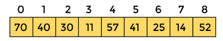

Linear Search Algorithm
In this article, we will discuss the Linear Search Algorithm. Searching is the process of finding some particular element in the list. If the element is present in the list, then the process is called successful, and the process returns the location of that element; otherwise, the search is called unsuccessful.Two popular search methods are Linear Search and Binary Search. So, here we will discuss the popular searching technique, i.e., Linear Search Algorithm.
Linear search is also called as sequential search algorithm. It is the simplest searching algorithm. In Linear search, we simply traverse the list completely and match each element of the list with the item whose location is to be found. If the match is found, then the location of the item is returned; otherwise, the algorithm returns NULL.
It is widely used to search an element from the unordered list, i.e., the list in which items are not sorted. The worst-case time complexity of linear search is O(n).
The steps used in the implementation of Linear Search are listed as follows -
1) First, we have to traverse the array elements using a for loop.
2) In each iteration of for loop, compare the search element with the current array element, and -
If the element matches, then return the index of the corresponding array element.
If the element does not match, then move to the next element.
3) If there is no match or the search element is not present in the given array, return -1.
Now, let's see the algorithm of linear search.
2) In each iteration of for loop, compare the search element with the current array element, and -
If the element matches, then return the index of the corresponding array element.
If the element does not match, then move to the next element.
3) If there is no match or the search element is not present in the given array, return -1.
Now, let's see the algorithm of linear search.
Algorithm:
Linear_Search(a, n, val) // 'a' is the given array, 'n' is the size of given array, 'val' is the value to searchStep 1: set pos = -1
Step 2: set i = 1
Step 3: repeat step 4 while i <= n
Step 4: if a[i] == val
set pos = i
print pos
go to step 6
[end of if]
set ii = i + 1
[end of loop]
Step 5: if pos = -1
print "value is not present in the array "
[end of if]
Step 6: exit
Working of Linear search:
Now, let's see the working of the linear search Algorithm. To understand the working of linear search algorithm, let's take an unsorted array. It will be easy to understand the working of linear search with an example.Let the elements of array are -

Let the element to be searched is K = 41
Now, start from the first element and compare K with each element of the array.

The value of K, i.e., 41, is not matched with the first element of the array. So, move to the next element. And follow the same process until the respective element is found.

Now, the element to be searched is found. So algorithm will return the index of the element matched.
Linear Search complexity:
Now, let's see the time complexity of linear search in the best case, average case, and worst case. We will also see the space complexity of linear search.1. Time Complexity
| Case | Time Complexity |
|---|---|
| Best Case | O(1) |
| Average Case | O(n) |
| Worst Case | O(n) |
Best Case Complexity - In Linear search, best case occurs when the element we are finding is at the first position of the array. The best-case time complexity of linear search is O(1).
Average Case Complexity - The average case time complexity of linear search is O(n).
Worst Case Complexity - In Linear search, the worst case occurs when the element we are looking is present at the end of the array. The worst-case in linear search could be when the target element is not present in the given array, and we have to traverse the entire array. The worst-case time complexity of linear search is O(n).
The time complexity of linear search is O(n) because every element in the array is compared only once.
2. Space Complexity
| Space Complexity: | O(1) |
|---|
The space complexity of linear search is O(1).